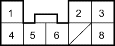

KS Model
- Disconnect the interlock control unit connector.
- Inspect the connector and connector terminals to be sure they are making good contact.
- If the terminal are bent, loose or corroded, repair them as necessary and recheck the system.
- Turn the ignition switch ACC (II).
- Measure the voltage between the No. 5 terminal of the interlock control unit connector and body ground. There should be no voltage.
- If there is no voltage, check for a blown No. 8 (7.5 A) fuse in the under-dash fuse/relay box or an open or short in the wire.
INTERLOCK CONTROL UNIT CONNECTOR

Wire side of female terminals
- Measure the voltage between the No. 1 terminal and body ground and between the No. 3 and body ground while the shift lever is in
 position. There should be voltage.
position. There should be voltage.
- If there is no voltage, check for a blown No. 8 (7.5 A) fuse in the under-dash fuse/relay box or an open or short in the wire.
- Check for continuity between the No. 8 terminal and body ground when the ignition switch in ACC (l) position and when the ignition switch OFF. There should be no continuity to ground in ACC (l) and continuity to ground in OFF.
- If the test results are different, check for a faulty interlock relay (key lock solenoid) or an open or short in the wires.
- Turn the ignition switch ON (ll).
- Press the brake pedal with the accelerator pedal released, measure the voltage between the No. 2 terminal of the interlock control unit connector and body ground. The shift lever must be in position. There should be battery voltage.
- If there is no voltage, check for an open or short in the wire.
- Turn the ignition switch OFF.
- Check for continuity between the No. 4 terminal and body ground and No. 6 terminal and body ground individually. There should be continuity to ground.
- If there is no continuity to ground, check for an open in the wire or poor ground (G401).